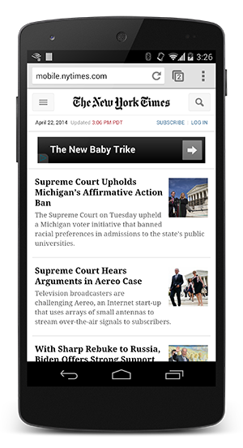

NYTimes with CSS

NYTimes without CSS (FOUC)
The above example, showing the NYTimes website with and without CSS, demonstrates why rendering is blocked until CSS is available - without CSS the page is effectively unusable. In fact, the experience on the right is often referred to as a “Flash of Unstyled Content” (FOUC). As a result, the browser will block rendering until it has both the DOM and the CSSOM.
CSS is a render blocking resource, get it down to the client as soon and as quickly as possible to optimize the time to first render!
However, what if we have some CSS styles that are only used under certain conditions, for example, when the page is being printed, or being projected onto a large monitor? It would be nice if we didn’t have to block rendering on these resources!
CSS “media types” and “media queries” allow us to address these use-cases:
<link href="style.css" rel="stylesheet">
<link href="print.css" rel="stylesheet" media="print">
<link href="other.css" rel="stylesheet" media="(min-width: 40em)">
A media query consists of a media type and zero or more expressions that check for the conditions of particular media features. For example, our first stylesheet declaration does not provide any media type or query, hence it will apply in all cases - that is to say, it is always render blocking. On the other hand, the second stylesheet will only apply when the content is being printed - perhaps you want to rearrange the layout, change the fonts, etc - and hence this stylesheet does not need to block the rendering of the page when it is first loaded. Finally, the last stylesheet declaration provides a “media query” which is executed by the browser: if the conditions match, the browser will block rendering until the stylesheet is downloaded and processed.
By using media queries, our presentation can be tailored to specific use cases such as display vs. print, and also to dynamic conditions such as changes in screen orientation, resize events, and more. When declaring your stylesheet assets, pay close attention to the media type and queries, as they will have big performance impact on the critical rendering path!
Let’s consider some hands-on examples:
<link href="style.css" rel="stylesheet">
<link href="style.css" rel="stylesheet" media="screen">
<link href="portrait.css" rel="stylesheet" media="orientation:portrait">
<link href="print.css" rel="stylesheet" media="print">
- The first declaration is render blocking and matches in all conditions.
- The second declaration is also render blocking: “screen” is the default type and if you don’t specify any type, it’s implicitly set to “screen”. Hence, the first and second declarations are actually equivalent.
- The third declaration has a dynamic media query which will be evaluated when the page is being loaded. Depending on the orientation of the device when the page is being loaded, portrait.css may or may not be render blocking.
- The last declaration is only applied when the page is being printed, hence it is not render blocking when the page is first loaded in the browser.
Finally, note that “render blocking” only refers to whether the browser will have to hold the initial rendering of the page on that resource. In either case, the CSS asset is still downloaded by the browser, albeit with a lower priority for non-blocking resources.